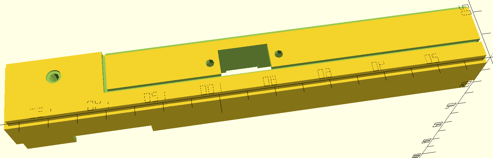

| The UX FFront Unit is an alternate design-spin on the original UX Front Unit used by the ICOM IC-900 UX band modules. It acts as a form-fit-function replacement for the orignal PCB Assembly (PCBA), in the case where the original board is lost or damaged beyond repair. However, with alternate software and assembly components, the module can perform some interesting tasks. One of which is to act as an interposer, whereby the module presents to the IC900/901 as one band, but the on-board microcontroller (MCU) translates the base-controller's frequency commands to the module's frequency space. Ostensibly, This would allow a module of one type to connect to a transverter, and seamlessly appear to operate on the antenna frequency of the transverter. Thus, one might then be able to populate their IC-900/901 with a rare frequency band (such as is offered by the UX-19 10m, or UX-129 1200 MHz modules) by using a more readily available module (such as a 2m UX-29) and a transverter. Another option allows the module to act as a stand-alone receiver that provides line-level, squelch-gated audio to a user connector. A simple RS-232 serial interface allows for remote control, or the radio can simply operate on a fixed frequency. A duplex receiver is one of the primary use-cases for this option. A small MCU is used to capture digital information from the base-controller and perform many of the tasks that were dedicated to discrete logic I.C.s on the original Front Unit design. This, along with some other design features, greatly reduces the parts count of the basic PCBA. The software for this basic function PCBA (designated as a -001 PCBA) is fairly simple and is focused on acquiring the 10-bit header frame and pulsing the PLL strobe signal after the 20-bit PLL data frame. The original 4066 switch array was replaced by 4053 (3P2T) and 74LVC1G3157 (1P2T) IC switches to create a 4P2T analog switch array (which occupies less space than two 4066 I.C.s) to handle the main/sub band selection. Using the MCU to capture the header frame allowed a number of components to be elliminated from the design. To save pins, the ADC on the MCU is used in concert with a 7-resistor divider to achieve an 8-position device address selection mechanism (only 6 of these positions are used to support the radio modules). For the "Interposer" option, designated as a -002 PCBA, only a few 0-ohm resistors need be moved to allow the MCU to solely control the data, clock, and strobe signals feeding the band-module PLL chip. The software for this option is somewhat more complex as the MCU now must capture the PLL data as well, and then process the data to calculate the actual PLL data frame which is then sent to the band-module PLL chip. For the "Stand-alone RX" option, designated as a -003 PCBA, there are a number of component changes needed. Several parts are elliminated, And more are added to allow the -003 to control the band-module PLL and provide de-emphisized audio to an interface connector (J4). The removed parts are those that would be used to connect to a base-controller such as that provided my the IC-900 or IC-901. The de-emphasis and squelch circuit is borrowed from the ACC FC-900 and is very basic. A digital POT provides squelch and level control which can be fixed, or adjusted using simple serial commands issued over an RS-232 interface. An out-board adapter provides the interface connector and an RS-232 transceiver IC. This adapter can be installed in the band-module front cover (a DSUB-9 opening must be cut), or a 3D-printed replacement cover. The Software link below provides instructions to obtain the source code for the various versions of this project. Links to the tools needed to compile and program the SiLabs C8051F530 microcontroller used for this project are provided below. |
|
Quick-Links:
Detailed hardware design Detailed software design Design Links |
| The C8051F530 is an MCU I’ve used on several other projects. This plus its small size made it a good choice for the limited board space offered for this project. The C8051F531 is the same device minus the "LIN" peripheral (this is an automotive communications protocol, which performs a function similar to J1850 or CAN). The cost difference (less than a Nickel) isn't worth much time thinking about unless you are buying thousands of the devices. It has enough timing resources to perform the edge captures needed for this application, and just enough general purpose I/O (GPIO) pins to get the job done. To describe this design, one must first consider the PCBA that it is to replace. My "ICOM UX Module Design Guide" discusses the Front Unit logic to a reasonable degree. Here, I have replaced most of the address and control logic circuits (IC3, IC4, IC5, Q8, Q9, part of IC6 and IC7, and associated discrete components) with the MCU and its associated software. The 4066 analog switch circuit was somewhat simplified by using a 4053 and a single analog switch. This leaves the PLL clock gate and MOD switch logic that was copied, more or less, from the ICOM design. IC3 captures the control logic from the base controller. Six signals are captured by IC3, plus the BUSY signal captured by IC5, but the main/sub signals are actually the same signal, but one is inverted by the base controller software (this allows the design to save one inverter transistor and a resistor). The simplified analog switch does not require an inverted version of the switch signal, so SUB is not needed in the new design. This leaves only 6 control signals that need to be provided by the MCU. Next are the clock and strobe for the PLL. A single AND gate is used to gate the base controller clock using the STB signal. This doesn't require any intervention by the MCU, but it still needs to know the state of the STB and also needs the clock signal. So, this means that STB, CK, and DATA must be provided to the MCU. The MCU must also provide the PLL strobe (PSTB) which gates date into the PLL chip. To support the interposer option, the MCU must provide a separate clock and data signal. These are routed with 0-ohm resistors so that one path or the other can be supported based on which resistors are installed or not. Thus, 6 GPIO pins are needed for the serial data services. To support the stand-alone RX option, a digital POT was needed. I chose an SPI type so that the same serial signals present for the PLL can also be used to control the POT, with only the addition of a /CS signal from the MCU. I chose to use the MCU ADC to capture one of 8 jumper states to set the device address (the ICOM design captures 7 states). Finally, two GPIO pins are used for the UART to allow the stand-alone device to be remotely controlled or confingured. This covers the 16 GPIO pins available on the F530 series and allows the MCU to fully control all aspects of the UX module interface under any of at least three build options. |
| The basic option (-001) software application level operates in a single, empty loop - all of the processing happens inside interrupt service routines (ISRs). Prior to this loop, the software initializes the MCU and registers. The ISRs are comprised of one timer interrupt (Timer 0), and one Programmable Counter/timer Array (PCA) interrupt. Timer 0 provides microsecond level pulse control for the PLL strobe signal. The PCA ISR services two GPIOs, one for the main clock input from the base controller, and one for the strobe signal from the base controller. The clock portion of the PCA ISR also features a compile-time directive to cover the build-option for the interposer. In either case, the code shifts the data into an internal register. This "bit-bang" architecture was chosen to allow greater flexibility when shifting data due to the fact that the ICOM protocol operates on bit field sizes that are not a multiple of 8 bits. This also leaves open options to address the various build options for this project. The second PCA GPIO is the strobe input, and this is used to either process the control data (transferring it to the GPIO pins) or pulsing the PSTB signal to latch the PLL data. For the interposer option, the PSTB operation would be replaced by a signal to the main application to calculate a new PLL data frame, clock it into the PLL, and then pulse the PSTB signal. For the Stand-alone option, the code is rather different. For this configuration, the requirement is for a simple, single-frequency RX. The main() application sets the control discretes, the DPOTs, and sends the PLL data for the desired frequency. The main-loop then polls for serial commands (with a UART ISR as an additional software element) that modify the existing settings or initiate storing these settings to non-volatile FLASH memory on the MCU. Since the FLASH memory is only eraseable by sector (512 bytes for this MCU), the system "walks" new data stores through the entire sector before requiring an erase operation (the software only accesses the last valid entry). Erases must be initiated by an operator, they are not automatic. Some UX modules only require one PLL register access to set the operating frequency, but there are several models that require 2 or more accesses (the UX-129 requires 4). To accomodate this variation, the stored data allows up to 5 PLL register values to be stored. These are sent in order from first to last when the module is reset. There is also a command for reading the configuration data. This is primarily for verification and debug purposes. An Excel spreadsheet is provided to allow the user to determine the desired PLL data for a given frequency/band combination. Because the Stand-Alone RX configuration requires a connector, a replacement cover was designed with 3D modeling software. This allows a connector to be installed at the front of the module without modifying the original cover (the original cover and front unit PCB are then stored together, prefereably somewhere that they can later be located with ease). The model was created with OpenSCAD (www.openscad.org). I was reluctant to try a text-based shaped description language, but I gained a high degree of functional literacy after only a few hours. The toutorial by Jeremie Francois was very helpful (I've only finished 1 out of 5 of his chapters). It's free, so I don't get any kickbacks from referrals...  The "SiLabs Programming guide" describes the steps and items needed to program the project MCU. The source code page provides access to the object code for the various SW modes, and describes where and how to access the source repo. |
| Admittedly, this project has a limited audience. However, there are a lot of ICOM UX modules out there, and I would venture to debate that many are in a box gathering dust for lack of a better use. Using the UX FFront Unit to re-purpose these modules could bring some interesting usefulness to these old workhorse radios. Here is a listing of the various project documents that are directly relevant to the UX FFront Unit Project: |